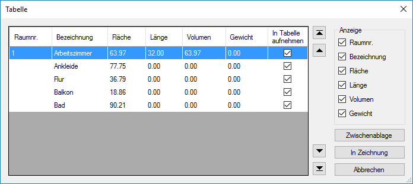
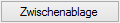

")


Ausgabe ausgewählter Massen-Angaben in einer Tabelle. Öffnet den Dialog Tabelle. (Diese Funktion ist nur möglich, wenn in der Zeichnung Massen-Angaben enthalten sind.) Die Tabelle kann auf der Zeichnung platziert oder in die Zwischenablage kopiert werden.
Die Darstellung der Tabelle können Sie vorab im Einstellungen-Dialog konfigurieren.
» Einstellungen (Dialog); [Konst3 | Massen | Einstellung → Tabelle].
Optionen im Dialog "Tabelle (für Massen-Angaben)"
 |
Tabellenfeld
Auflistung aller in der Zeichnung enthaltenen Masse-Angaben.
Die in der Tabelle enthaltenen Spalten können unter Anzeige gewählt werden (s. unten).
§Um die Einträge auf- oder absteigend zu sortieren:
Klicken Sie auf eine Spaltenüberschrift. Wiederholtes Klicken kehrt die Sortierrichtung um.
§Um ausgewählte Einträge nach oben oder unten zu verschieben:
–Markieren Sie den oder die gewünschten Einträge per Mausklick. –Verwenden Sie die Sortierpfeile rechts vom Tabellenfeld:
|


In Tabelle aufnehmen
|
Dieser Eintrag wird in der ausgegebenen Tabelle nicht aufgeführt. |
|
Eintrag wird in der Tabelle aufgeführt. |


Auswahl der in der Tabelle angezeigten Spalten (vgl. Tabellenfeld).
Nach der Aktion wechselt ISBCAD zur Flächenermittlung. [Konst3 | Massen | Fläche → Klicken Sie Punkte an].

Kopiert die Tabelle mit den aktuellen Einstellungen in die Windows®-Zwischenablage.
Tabelle in die Zeichnung übernehmen.
Der Dialog wird geschlossen. Sie können die Tabelle per Mausklick in der Zeichnung absetzen. [Lage].
Schließt den Dialog. Es werden keine Änderungen übernommen.
Zugehörige Referenzen: